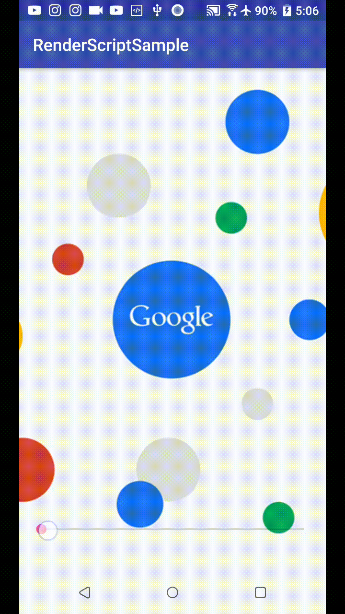

Intrdoction
本篇文章來介紹，如何在Android上，簡單實現高斯模糊（Gaussian blur)效果。又稱毛玻璃效果或磨砂效果。透果使用Google提供的RenderScriptApi，一個強大的圖片處理框架，幫助Android開法者專注於圖片處理算法的邏輯，而不是處理圖像複雜的計算。
RenderScript
RenderScript根據Android官方網站的介紹，在計算的效率上，能充分利用GPU，CPU的計算能力，所以在編寫代碼的時候，毋須擔心具體硬件的不同，都能寫出具高效率的代碼。此篇文章實現的Gaussian blur效果，只是使用到了RenderScript 其中一個操作類ScriptIntrinsicBlur，RenderScriptApi的強大遠不及此，更詳情可以參考 Android 官網 RenderScript介紹
添加Api依賴庫
添加此依賴庫也很簡單，只要在app/build.gradle文件，在android/defaultConfig配置中添加兩行代碼：
1 | android { |
代碼實現起來也很簡單，如下：
1 | public Bitmap blurBitmap(Bitmap bitmap) { |
透過設置模糊半徑radius 大小來控制圖片的清晰度。
這邊值得注意的是ScriptIntrinsicBlur只支援API17以上版本，為了兼容舊版，Google提供了android.support.v8.renderscript兼容包，使用時只要引入該兼容包下相關的類別即可。
效果如下:

參考資料：
Android RenderScript
維基百科介紹 Renderscript
CSDN-huachao1001部落格